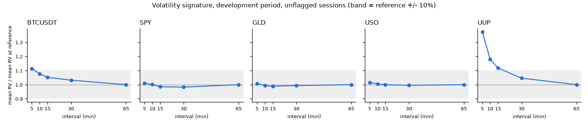

Cross-Asset Volatility ForecastingCross-Asset Volatility Forecasting
volatility ของสินทรัพย์อื่นช่วยพยากรณ์ volatility วันถัดไปได้ดีกว่าโมเดลที่ใช้ข้อมูลของตัวเองไหม คำตอบคือไม่ช่วย และในช่วง test โมเดลที่เพิ่มข้อมูลข้ามสินทรัพย์แย่กว่าทุกคู่
Does other assets' volatility improve next-day volatility forecasts over an own-asset model? No. On the final test, every cross-asset model did worse than its own-asset twin.
- บทบาทRole
- โปรเจกต์ส่วนตัว ทำทุกขั้นตั้งแต่ดึงข้อมูลจนถึง API และ dashboardPersonal project, every stage from ingestion to API and dashboard
- ข้อมูลData
- BTCUSDT, SPY, GLD, USO, UUP ราย 5-30 นาที, 2020-07-01 ถึง 2026-10-30 (1,592 วันทำการ)BTCUSDT, SPY, GLD, USO, UUP at 5-30 minute bars, 2020-07-01 to 2026-10-30 (1,592 sessions)
- เครื่องมือTools
- Python, pandas, statsmodels, arch, LightGBM, FastAPI, Streamlit, pytest
- ผลResult
- ไม่ช่วย: loss สูงขึ้น 10 จาก 10 คู่ แย่ลงอย่างมีนัยสำคัญใน SPY และ USONo: higher loss in 10 of 10 pairs, significantly worse for SPY and USO
โจทย์Problem
นักลงทุนมักเชื่อว่าตลาดเชื่อมกัน เช่น ถ้าดอลลาร์หรือน้ำมันผันผวน หุ้นก็จะผันผวนตาม ผมอยากรู้ว่าความเชื่อนี้ช่วยพยากรณ์ volatility วันถัดไปได้จริงไหม เมื่อเทียบกับ HAR-RV ซึ่งเป็น baseline ที่แข็งแรงและใช้แค่ volatility ในอดีตของสินทรัพย์ตัวเอง
Markets are often assumed to be linked: if the dollar or oil turns volatile, equities follow. I wanted to know whether that idea actually improves next-day volatility forecasts against HAR-RV, a strong baseline that uses only the asset's own past volatility.
ผมตั้งไว้ก่อนเริ่มว่าผล null คือผลที่รายงานได้ และห้ามจูนโมเดลเพื่อให้ได้คำตอบที่อยากได้
Before any model ran, a null result was declared acceptable, and tuning toward a preferred answer was ruled out.
วิธีทำProcess
ข้อมูลและเป้าหมายData and target
- เป้าหมายคือ realized variance ของวันทำการถัดไป: ผลรวมของ log return ยกกำลังสองระหว่างวัน
- หุ้นและ ETF ใช้เฉพาะช่วงตลาดเปิด 09:30-16:00 ET ไม่รวม overnight ส่วน BTC ใช้ 24 ชั่วโมงที่จบตอน 16:00 ET
- UUP ซื้อขายบางมาก 49.63% ของ return ราย 5 นาทีเป็นศูนย์ จึงใช้ช่วง 30 นาที ตามกฎ volatility signature ที่ล็อกไว้ก่อนดูผลพยากรณ์ (D-027)
- วันที่มีข้อมูลไม่ถึง 80% ของที่ควรมีจะถูก flag และไม่ใช้เป็นเป้าหมาย ไม่ forward-fill ราคา
- The target is next-session realized variance: the sum of squared intraday log returns.
- ETFs use the regular session only, 09:30-16:00 ET, with no overnight return. BTC uses the 24 hours ending 16:00 ET.
- UUP is thin: 49.63% of its 5-minute returns are exactly zero, so it uses 30-minute bars, chosen by a volatility-signature rule fixed before looking at forecasts (D-027).
- Days with fewer than 80% of the expected bars are flagged and never used as targets. Prices are never forward-filled.

โมเดลและการทดสอบModels and testing
- 7 โมเดลต่อสินทรัพย์: naive, EWMA, GARCH(1,1), HAR-RV, HAR-X (HAR-RV + ข้อมูลข้ามสินทรัพย์), LightGBM เฉพาะข้อมูลตัวเอง และ LightGBM ที่เพิ่มข้อมูลข้ามสินทรัพย์
- คำถามวิจัยตอบด้วย 2 คู่: HAR-X เทียบ HAR-RV และ LightGBM CROSS เทียบ OWN
- walk-forward แบบ expanding window refit ทุกเดือน LightGBM จูนเฉพาะภายในข้อมูล train ของแต่ละ fold
- วัดด้วย QLIKE และทดสอบความต่างด้วย Diebold-Mariano (HAC, HLN)
- ล็อกรายชื่อโมเดลและทุกค่าในวันที่ 2026-11-03 พร้อมบันทึก hash ของไฟล์ (D-047) แล้วจึงรัน 12 เดือนสุดท้ายครั้งเดียว
- มี test กัน look-ahead: เปลี่ยนข้อมูลหลังวัน t เป็นค่าสุ่มแล้ว feature ของวัน t ต้องไม่เปลี่ยน
- Seven models per asset: naive, EWMA, GARCH(1,1), HAR-RV, HAR-X (HAR-RV plus cross-asset terms), LightGBM on own features and LightGBM with cross-asset features.
- The research question is answered by two pairs: HAR-X vs HAR-RV and LightGBM CROSS vs OWN.
- Walk-forward with an expanding window and a monthly refit. LightGBM is tuned only inside each fold's training rows.
- QLIKE is the metric, and differences are tested with Diebold-Mariano (HAC, HLN correction).
- The model list and every setting were frozen on 2026-11-03 with file hashes recorded (D-047). The final 12 months were then run once.
- Leakage tests: scrambling all data after day t must leave the features at t unchanged.
สิ่งที่ส่งมอบSolution
pipeline ดึงข้อมูลจาก Binance และ Alpaca (feed SIP) พร้อมตรวจ checksum, การเปรียบเทียบ 7 โมเดลพร้อมสถิติทดสอบ, FastAPI ที่ให้ค่าพยากรณ์ HAR-RV และ dashboard Streamlit ที่แสดงข้อมูล, ผลพยากรณ์เทียบค่าจริง, ผล DM test และ error แยกตาม regime ทุกการตัดสินใจที่ไม่ชัดเจนบันทึกไว้ใน DECISIONS.md (D-001 ถึง D-051)
A pipeline that pulls Binance and Alpaca (SIP feed) data with checksum checks, a seven-model comparison with statistical tests, a FastAPI service that serves the HAR-RV forecast, and a Streamlit dashboard with data status, forecast vs realized, DM results and errors by regime. Every non-obvious decision is logged in DECISIONS.md (D-001 to D-051).
ผลลัพธ์Results
ช่วง test 12 เดือนสุดท้าย (247-249 วันต่อสินทรัพย์) ค่าบวกหมายถึงโมเดลที่เพิ่มข้อมูลข้ามสินทรัพย์มี QLIKE สูงกว่า คือแย่กว่า
Final 12-month test (247-249 days per asset). Positive means the cross-asset model has higher QLIKE, so it is worse.
| สินทรัพย์ | HAR-X เทียบ HAR-RV | DM p | LightGBM CROSS เทียบ OWN | DM p |
|---|---|---|---|---|
| BTCUSDT | +3.9% | 0.128 | +1.0% | 0.643 |
| SPY | +5.6% | 0.024 | +5.6% | 0.054 |
| GLD | +8.1% | 0.196 | +1.6% | 0.689 |
| USO | +6.6% | 0.033 | +11.5% | 0.075 |
| UUP | +2.2% | 0.641 | +3.5% | 0.125 |
| Asset | HAR-X vs HAR-RV | DM p | LightGBM CROSS vs OWN | DM p |
|---|---|---|---|---|
| BTCUSDT | +3.9% | 0.128 | +1.0% | 0.643 |
| SPY | +5.6% | 0.024 | +5.6% | 0.054 |
| GLD | +8.1% | 0.196 | +1.6% | 0.689 |
| USO | +6.6% | 0.033 | +11.5% | 0.075 |
| UUP | +2.2% | 0.641 | +3.5% | 0.125 |
ตัวหนา = p < 0.05 ที่มา: reports/test_ablation.csvBold = p < 0.05. Source: reports/test_ablation.csv
- ในช่วง development ไม่มีโมเดลข้ามสินทรัพย์ตัวไหนดีกว่าคู่ของมันอย่างมีนัยสำคัญ
- permutation importance ของ LightGBM ให้ภาพเดียวกัน: HAR ของสินทรัพย์ตัวเองสำคัญที่สุด และไม่มีคอลัมน์ข้ามสินทรัพย์ติด 3 อันดับแรกในสินทรัพย์ไหนเลย
- naive, EWMA และ GARCH มี QLIKE สูงกว่า HAR-RV ทุกสินทรัพย์ทั้งสองช่วง HAR-RV จึงเป็นโมเดลที่เสถียรที่สุด
- On the development period, no cross-asset model was significantly better than its own-asset twin.
- LightGBM permutation importance agrees: the asset's own HAR terms dominate, and no cross-asset column is in the top three for any asset.
- Naive, EWMA and GARCH had higher QLIKE than HAR-RV on every asset in both periods, so HAR-RV was the most robust model.
สิ่งที่ได้เรียนรู้Learnings
- LightGBM พังเมื่อ volatility ออกนอกช่วงที่เคยเห็น ปีที่ test ทองและน้ำมันผันผวนกว่าช่วง train มาก LightGBM บน GLD จาก −3.6% (development) กลายเป็น +24.7% (test) เทียบ HAR-RV เพราะโมเดลต้นไม้พยากรณ์สูงกว่าค่าที่เคยเห็นตอน train ไม่ได้ คำอธิบายนี้มาจากการวิเคราะห์หลังเห็นผล test (D-048) ไม่ได้ทดสอบไว้ล่วงหน้า
- ข้อมูลข้ามสินทรัพย์เพิ่ม noise มากกว่าข้อมูล HAR-X เพิ่ม 12 คอลัมน์บนข้อมูลราว 1,000-1,500 แถว ความยืดหยุ่นที่เพิ่มมาแลกกับ noise ที่มากกว่า
- GARCH ไม่เหมาะกับ BTC เพราะเห็น return แค่วันละค่า และ return วันจันทร์ครอบ 72 ชั่วโมงขณะที่เป้าหมายครอบ 24 ชั่วโมง
- ข้อจำกัด มี test year เดียว และรายงาน DM test 35 ครั้งต่อช่วง จึงคาดได้ว่าจะมี p ต่ำกว่า 0.05 บางค่าโดยบังเอิญ ผมรายงานทุก test ไม่ใช่เฉพาะที่มีนัยสำคัญ
- LightGBM broke down when volatility left the training range. The test year was far more volatile for gold and oil. On GLD, LightGBM went from −3.6% (development) to +24.7% (test) against HAR-RV, because tree models cannot forecast above levels seen in training. This explanation is a diagnostic made after the test (D-048), not tested in advance.
- Cross-asset features added more noise than information. HAR-X adds 12 columns fitted on roughly 1,000-1,500 rows, and the extra flexibility cost more than it carried.
- GARCH is a poor fit for BTC RV. It sees one return per session, and a Monday return spans 72 hours of trading while the target spans 24.
- Limits. There is one test year, and 35 DM tests are reported per period, so a few p-values below 0.05 are expected by chance. All tests are reported, not only the significant ones.